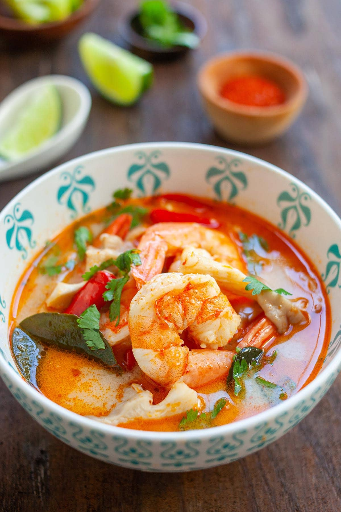

Tom Yum
Preparation Time: 15mins
Cook Time: 10mins

Ingredients
- 12 oz. shrimp or tiger prawn, head-on and shell-on
- 2 1/2 cups shrimp stock preferred, canned chicken stock, or water
- 1 stalk lemongrass cut into 3-inch strips, pounded with a cleaver
- 3 slices galangal
- 6 kaffir lime leaves bruised
- 6 bird's eyes chilies pounded
- 6 fresh oyster mushrooms cut into pieces
- 2 tablespoons nam prik pao Thai roasted chili paste
- 2 tablespoons nam prik pao oil
- 3 teaspoons fish sauce
- 3 1/2 tablespoons lime juice
- Cilantro leaves for garnishing
Instructions
-
Peel the shell and head off the shrimp, keep the tails on. Save the
shell and shrimp head. Devein the shrimp and set aside.
-
In a pot, bring 3 cups of water to boil. Add the shrimp head and shell
to make shrimp stock. Boil until the water turns slightly orange in
color. Press the shrimp heads with a spatula to extract the juice from
the heads.
-
Simmer and let the stock reduce to 2 1/2 cups. Drain the shrimp stock
and discard the shrimp heads and shells.
-
Turn the heat to high and add the lemongrass, galangal, kaffir lime
leaves, bird's eye chilies, mushroom, nam prik pao and nam prik pao oil
to the shrimp stock. Bring it to boil.
-
Add in the shrimp and fish sauce. Lastly, add the lime juice (if you add
lime juice too early, the soup might turn bitter). Boil until the
shrimps are cooked, dish out, and garnish with cilantro leaves. Serve
immediately.